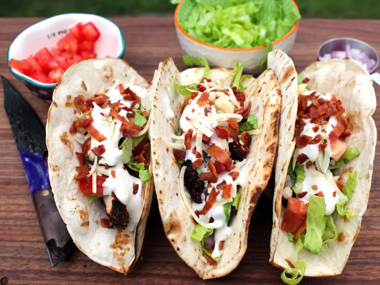

Chicken Bacon Ranch Tacos Recipe

Description
No boring tacos here! These chicken bacon ranch tacos are made with seasoned
and grilled chicken, lettuce, red onions, tomatoes, pepper Jack, cheese, ranch,
and bacon. These tacos are unique—you might never eat a taco without ranch
again.
Ingredients
- 6 slices bacon
- 2 tablespoons smoked paprika
- 1 tablespoon onion powder
- 1 tablespoon dried oregano
- 1 teaspoon garlic salt
- 1 pound skinless, boneless chicken breast
- 6 (6 inch) flour tortillas
- 3 tablespoons chopped red onion
- 1 cup shredded lettuce
- 1/2 cup shredded pepper Jack cheese
- 2 plum tomatoes, seeded and chopped
- 1/4 cup ranch dressing, or to taste
Directions
- Preheat an outdoor grill for medium-high heat and lightly oil the grate.
- Place bacon in a large skillet and cook over medium-high heat, turning
occasionally, until evenly browned, about 10 minutes. Drain bacon slices on
paper towels.
- Whisk smoked paprika, onion powder, oregano, and garlic salt together in a
shallow bowl. Coat chicken with seasoning, and cook on the prepared grill until
no longer pink at the center and juices run clear, about 10 minutes per side. An
instant-read thermometer inserted into the center should read 165 degrees F (74
degrees C).
- Place tortillas on the hot grill and heat until lightly grilled, 20 to 30 seconds per
side.
- Slice chicken and place in warm tortillas. Top with shredded lettuce, red onions,
shredded cheese, and chopped tomatoes. Drizzle with ranch dressing. Crumble
bacon over top. Serve immediately.